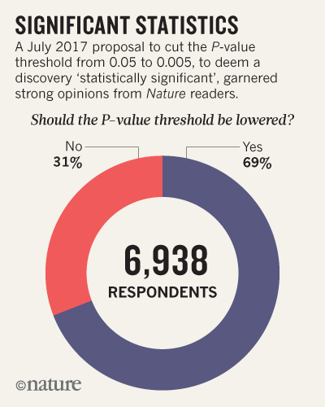

A recent paper, Redefine Statistical Significance by 72 (😱) co-authors, has caused quite a stir in the statistical community. Our student-run journal club at Vanderbilt will be discussing this contribution at our meeting led by Nathan James this week, so I’ve attempted to create a list of significant responses/commentary that have come out since this paper was posted on PsyArXiv.
This was compiled mostly via a quick Twitter search - please let me know what we are missing!
- Justify Your Alpha: A Response to “Redefine Statistical Significance”: Response posted to PsyArXiv by 88 (😱😱) researchers suggesting that researchers ought to select and justify P-value thresholds prior to collecting any data.
- ‘One-size-fits-all’ threshold for P values under fire: Nature News article summarizing the original paper and the “Justify your Alpha” response; includes results from a poll of Nature readers “Should the P-value threshold be lowered.”

For what it’s worth, others have found opposing results in a different population:
Should we lower the p-value for statistical significance from 0.05 to 0.005 ?
— C. Michael Gibson MD (@CMichaelGibson) July 27, 2017
Vote & discuss
- Abandon Statistical Significance: Response suggesting abandoning the null hypothesis significance testing paradigm entirely.
- What a nerdy debate about p-values shows about science — and how to fix it
- Changing the default p-value threshold for statistical significance ought not be done, and is the least of our problems.: Medium post by psychologist Timothy Bates where he calls the proposal “a risky distraction” from the root causes of irreproducible results.
- The Effort Report, episode 55: The most recent episode of The Effort Report (a podcast by Elizabeth Matsui and Roger Peng) discusses this topic.
Please comment/let me know if we have missed anything!